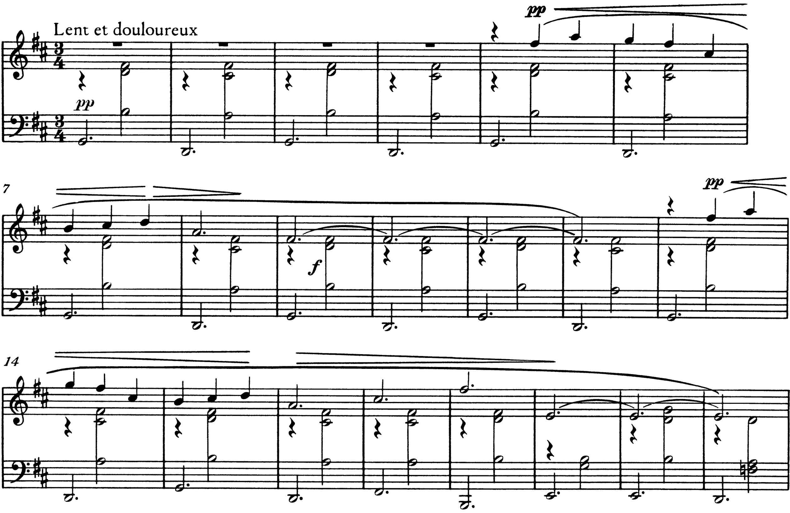

Piano 1 · Bb. 1–21: due settime maggiori che si alternano, poi il fa♮

- ① b. 1: sol–si–re–fa♯: settima maggiore sul sol
- ② b. 2: re–la–do♯–fa♯: settima maggiore sul re
- ③ bb. 3–4: la stessa alternanza; il fa♯4 resta fermo
- ④ b. 5: la melodia entra sul secondo movimento
- ⑤ b. 6: sol5 sopra l’accordo di re: tritono con il do♯4
- ⑥ b. 7: do♯5 sopra l’accordo di sol: tritono con il sol2
- ⑦ b. 8: la4 sopra il re: sospensione
- ⑧ bb. 9–12: fa♯4 tenuto per quattro battute, la nota comune alle due settime; chiusa sopra il re
- ⑨ bb. 13–16: identiche alle bb. 5–8
- ⑩ b. 17: fa♯ minore, do♯5
- ⑪ b. 18: si minore, fa♯5
- ⑫ b. 19: mi4, una nona sotto: mi minore
- ⑬ b. 20: mi minore con la settima
- ⑭ b. 21: fa♮3: re minore, il mi4 come nona aggiunta
Le bb. 1–4, pp, espongono da sole l’accompagnamento. Sul primo movimento il basso tiene una minima puntata, sol2 nelle battute dispari e re2 nelle pari; sul secondo entra un accordo di minima che occupa i due righi: si3–re4–fa♯4 sopra il sol, la3–do♯4–fa♯4 sopra il re. Gli accordi che ne risultano sono sol–si–re–fa♯ e re–la–do♯–fa♯, due settime di quarta specie (accordi di settima maggiore) complete, allo stato fondamentale. Le due sonorità hanno in comune il fa♯4, che resta fermo nella stessa voce, e si succedono per moto di quarta al basso. Nessuna delle due contiene il tritono, e questo dato basta a escluderle da un rapporto di dominante e tonica: Persichetti, citato da D’Urso e Bertolini, osserva che le armonie con il tritono «suonano come accordi dominantici», e indica proprio nella loro assenza la condizione del colore modale (Il linguaggio della musica, 5° anno, p. 241). L’armatura è quella di re maggiore, ma il basso comincia sul sol e vi ritorna in ogni battuta dispari; la collezione impiegata, sette suoni con il do♯, è la scala di re maggiore non meno che il modo lidio di sol, che D’Urso e Bertolini descrivono come una scala maggiore con il quarto grado innalzato (p. 240). Le prime sedici battute non decidono fra le due letture. Il centro di re è sostenuto dall’armatura, dalla melodia, che si posa sul la4 e sul fa♯4 sopra l’accordo di re (bb. 8 e 12), e dalla conclusione delle due strofe; il centro di sol, dalla posizione metrica e dall’inizio del brano. Surian elenca fra i tratti delle prime composizioni di Satie «le armonie con spiccate inflessioni modali» e «le successioni di accordi senza rapporti tra di loro», nelle quali «l’accordo singolo rimane come isolato, sospeso dall’obbligo di risolversi» (Manuale di storia della musica, vol. IV, p. 33): le bb. 1–16 realizzano il principio con due soli accordi.
La melodia, entrata alla b. 5, impiega sei suoni della scala (fa♯, la, sol, do♯, si, re) e non tocca il mi fino alla b. 19. Il tritono compare soltanto come urto fra melodia e accompagnamento: il sol5 sopra l’accordo di re (bb. 6 e 14) e il do♯5 sopra l’accordo di sol (bb. 7 e 15) formano con il do♯4 e con il sol2 la quarta eccedente sol–do♯, cioè l’intervallo che caratterizza il lidio di sol. Alla b. 17 l’alternanza si interrompe. Il basso sale al fa♯2 e scende al si1, e sopra di essi la mano destra forma le triadi di fa♯ minore (la3–do♯4–fa♯4) e di si minore (si3–re4–fa♯4), mentre la melodia tocca il do♯5 e il fa♯5. Alla b. 19 il basso scende al mi2, la mano sinistra porta sol3–si3 e la melodia cade al mi4, una nona sotto il fa♯5 precedente, e lo tiene per tre battute legate sopra il mi minore della b. 19, il mi minore con settima della b. 20 (mi2, si3, re4–sol4) e il re minore della b. 21 (re2, fa3–la3, re4). Il basso percorre così fa♯–si–mi per quinte discendenti e poi scende di un tono, e il fa♮3 della b. 21, primo suono estraneo all’armatura, introduce il modo minore sulla stessa tonica. Sul re minore il mi4 della melodia, tenuto dalla b. 19, diventa una nona aggiunta: la frase si ferma su un accordo di tonica minore arricchito da un suono che non risolve.

La tavola riporta su tutta la prima strofa e sulla chiusa le collezioni e gli accordi che le quattro slide delle altezze descrivono passo per passo.
Piano 2 · Il materiale e le sue trasformazioni

Il materiale si riduce a tre elementi: la figura d’accompagnamento, invariata per ritmo e registro; le due settime di quarta specie delle bb. 1–16; quattro frasi melodiche che non si sviluppano ma si ripetono o si prolungano. La prima frase ritorna identica alle bb. 13–16 e, nella seconda strofa, alle bb. 44–47 e 52–55; la seconda, terza e quarta frase ritornano alle bb. 56–60, 61–70 e 71–76 con le stesse altezze, salvo la variante finale. Surian annovera fra i caratteri delle Gymnopédies «la pressoché totale assenza di un qualsivoglia sviluppo tematico» (p. 33), e Salvetti descrive il procedimento compositivo di Satie come «del tutto estraneo al principio di sviluppo tradizionale»: brevi idee «semplicemente reiterate, finché altre ne prendono il posto senza consequenzialità apparente» (La nascita del Novecento, p. 101). Nella prima Gymnopédie la consequenzialità non manca del tutto, perché le frasi si concatenano per nota comune e per grado: il fa♯ è comune ai due accordi delle bb. 1–16 e alle triadi delle bb. 17–18; il mi4 tenuto lega il mi minore al re minore (bb. 19–21); il re del basso, già tonica alla b. 21, diventa pedale per le bb. 23–31.
Le trasformazioni sono di due specie. La prima è il cambiamento del basso sotto una figura immobile: il fa♯4 della melodia resta per quattro battute sopra l’alternanza sol–re (bb. 9–12), il mi4 sopra mi–mi–re (bb. 19–21), il re5 sopra il pedale di re mentre le sonorità superiori cambiano (bb. 25–26, 30–31). La seconda è la mutazione di un solo suono: il fa♯ che diventa fa♮ (bb. 21, 27, 72–76) e il do♯ che diventa do♮ (bb. 22–31, 38, 73–75). Sono le note che D’Urso e Bertolini chiamano modali, quelle che distinguono un modo dalla scala di riferimento (p. 240): il do♮ è il settimo grado abbassato del misolidio di re, il fa♮ la terza minore del dorico e dell’eolio. L’intera seconda strofa si spiega così come una ripetizione nella quale, alle ultime sette battute, le due note modali prendono il posto della terza e della sensibile della tonalità.
Piano 3 · La forma: due strofe, la seconda variata nella chiusa

Il brano è formato da due strofe di trentanove battute, la seconda identica alla prima fino alla b. 71. Ciascuna strofa comprende un’introduzione di quattro battute e quattro frasi, le prime due nella scala di re maggiore, la terza nella collezione dei tasti bianchi sopra il pedale di re, la quarta di nuovo in re con la cadenza.
| Sezione | Battute | N. bb. | Materiale | Centro / collezione | Indicazioni |
|---|---|---|---|---|---|
| Introduzione | 1–4 | 4 | basso e accordo: sol–si–re–fa♯ / re–la–do♯–fa♯ | scala di re maggiore (sol lidio / re ionio) | Lent et douloureux, pp |
| Frase a | 5–12 | 8 | melodia fa♯–la… la (5–8), fa♯4 tenuto (9–12), sopra la stessa alternanza | idem | pp, forcelle; f (9) |
| Frase a′ | 13–21 | 9 | 13–16 = 5–8; do♯5, fa♯5 su fa♯ min. e si min. (17–18); mi4 tenuto su mi min., mi min.⁷, re min. (19–21) | re maggiore; fa♮ (21) | pp |
| Frase b | 22–31 | 10 | la min. (22); pedale di re (23–31); due semifrasi: 22–25, 26–30, con il re5 ribattuto | tasti bianchi su re: re dorico (do♮, fa♮ alla b. 27) | p, forcelle |
| Frase c (chiusa) | 32–39 | 8 | basso mi–fa♯–si–mi–la–re; v con settima, undicesima e tredicesima → I | re maggiore; do♮ (38) | — |
| Strofa II | 40–71 | 32 | = bb. 1–32 | come sopra | pp (40, 44, 52); f (48); p (61) |
| Chiusa variata | 72–78 | 7 | variante delle bb. 33–39: pedale di mi (71–76), fa♮ e do♮; v → i | re minore (dorico) | — |
Le proporzioni interne della strofa (4 + 8 + 9 + 10 + 8) sono quasi regolari: le frasi si allungano per prolungamento della nota finale (bb. 9–12, 19–21) o per ripetizione della semifrase (bb. 26–30), non per inserti. La frase centrale è la più lunga e la sola che cambi collezione; la chiusa è la sola che percorra un giro di quinte. Se la successione re maggiore – re dorico – re maggiore suggerisce una piccola forma ternaria dentro la strofa, il ritorno della scala iniziale alla b. 32 non riporta però il materiale iniziale, e la terza frase non è una ripresa: la strofa si legge meglio come una catena di frasi che si chiude con l’unica cadenza del brano. La forma complessiva, A–A′, è quella di una danza strofica nella quale la seconda esposizione cambia soltanto la conclusione. Galli ricorda che il titolo designa le danze accompagnate da canti che si svolgevano nell’antica Grecia (Storia della musica 3, p. 302); la partitura non contiene alcun riferimento descrittivo, e l’unica relazione verificabile con il titolo è il carattere di danza lenta, ternaria e ripetitiva.